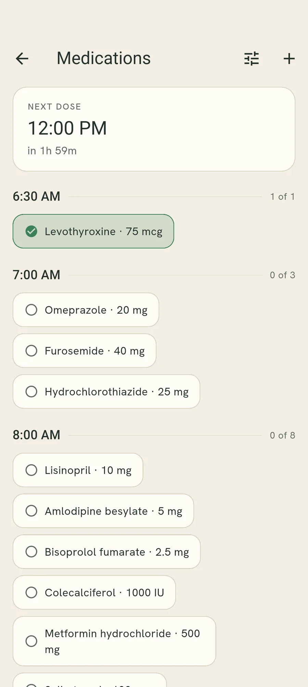
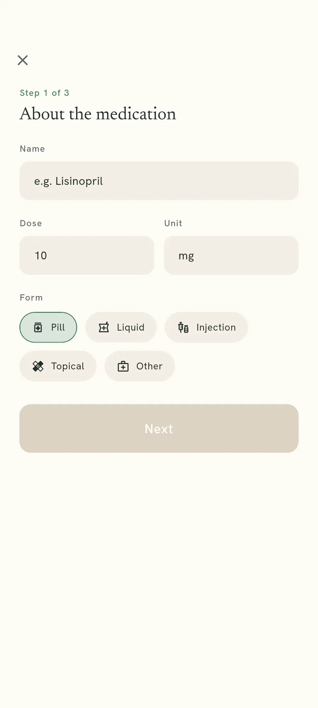
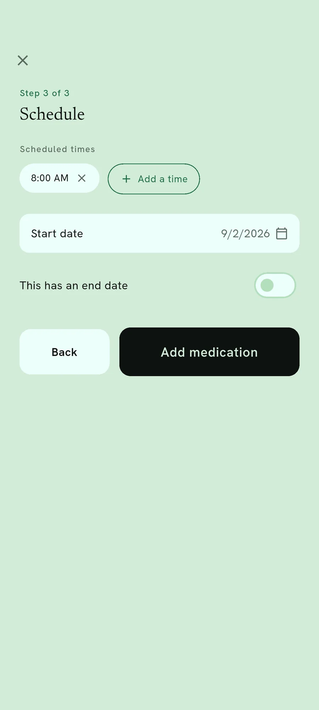
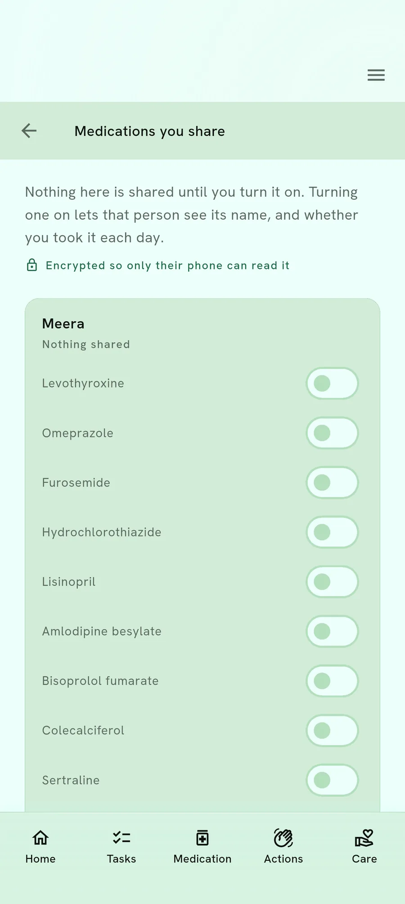

Medications
Grouped by when, not by name.
A morning handful is one group rather than five separate things, and a tablet taken three times a day counts three times.
What the list looks like
Everything you take at the same hour sits together. The next dose due is at the top with a countdown, so the screen answers the only question you usually have.
The unit is the dose, not the medication. A tablet taken three times a day is three ticks, so the count tells you what is left today.
Times, then medications
Each group is an hour. Tick a dose and the chip fills in and the count for that time goes up.

Why the dose is the unit
“Did I take my tablets?” is not usually the question. The question is whether you took the eight o’clock one, and a list that ticks off a whole medication cannot answer it.
Counting doses also makes the honest answer visible on a bad day: two of three is two of three, not a failure.
Adding one, and sharing it
Add a medication from the list
A short wizard asks for the name and dose first, then when you take it.

Set the times you take it
One is already set for eight in the morning. Change it, or add more for each dose — a medication needs at least one.

Share a name, one person at a time
You choose which medications each person can see, separately for each of them, and it starts off.
